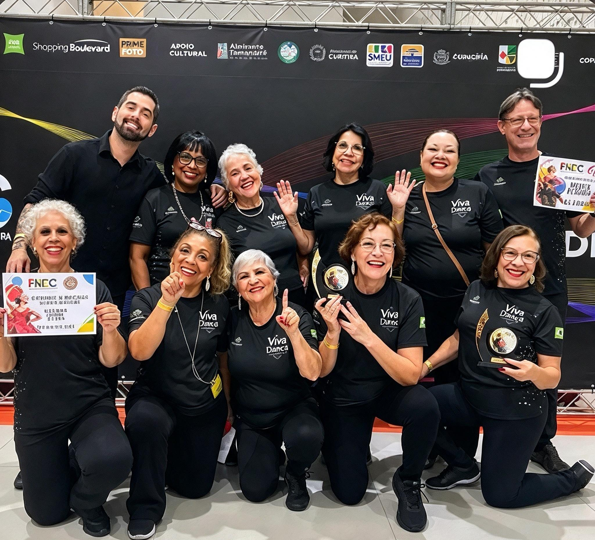

2015 · Nossa trajetória
O encontro que deu início a tudo
foi quando o grupo começou, O grupo inicial reunia mulheres com trajetórias diversas: algumas vinham de experiências em bailes, teatro, música, desfiles; outras nunca haviam dançado, movidas apenas pela vontade de aprender.